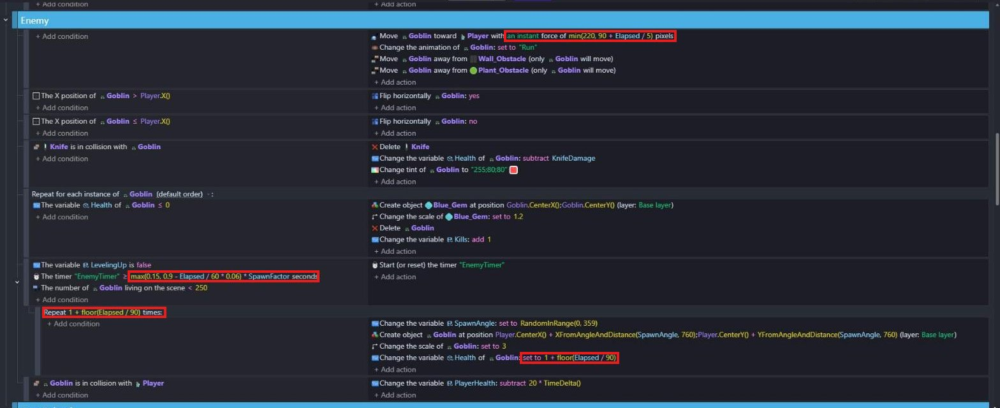
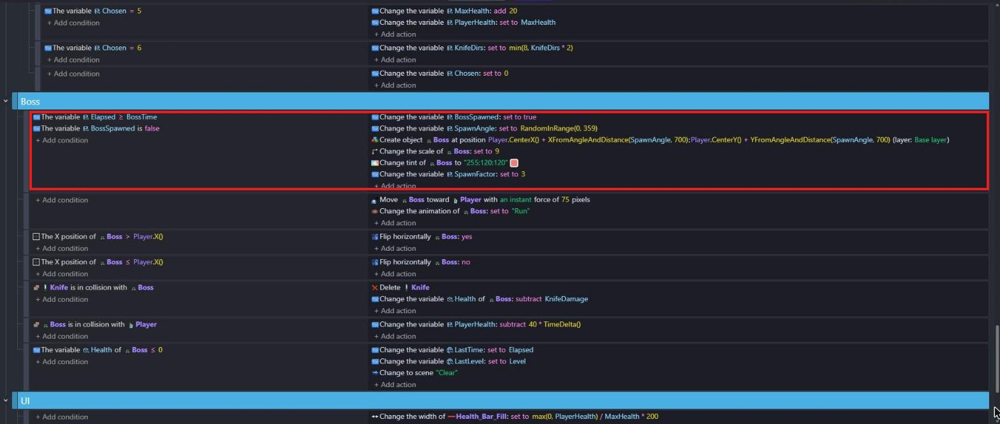
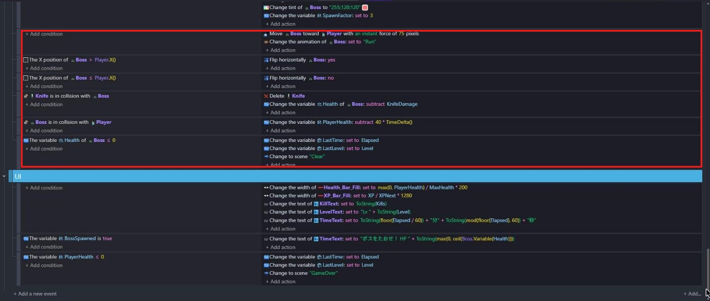
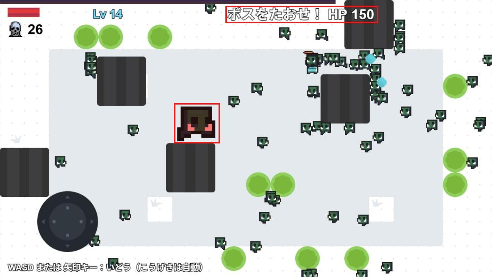

だんだん強くなる敵とボス
🎯 この章でできるようになること
- TimeDelta() で、たった時間を数えて「○分○秒」と表示できる
- たった時間を式に入れて、だんだんむずかしくなるゲームにできる
- オブジェクトを複製して、ボスを作れる
- 「1回だけ動く」目じるしの変数を使って、ボスを1体だけ出せる
5-1. この章で作るしくみ
画面の上に「○分○秒」と出す
5-2. 時間を数えよう
「Game Scene (Events)」の Start グループで、「At the beginning of the scene」の下に、条件のないイベントを作ります。
アクションは「Change variable value」で Elapsed を「+ (add)」TimeDelta()。
Elapsed は第3章で作った変数で、ゲームが始まってから何秒たったかが入ります。
レベルアップ中はタイムスケールが 0 なので、TimeDelta() も 0 になります。
だから、強化をえらんでいるあいだは時間がふえません。
「Game Scene」のタブで、「Text」の TimeText を作ります。
Initial text to display は 0分0秒、Size は KillText と同じくらい。
UI レイヤーの、画面の上のまん中に置きます。
イベントの UI グループで、条件のないイベントにアクションを足します。
TimeText の「Text」で「= (set to)」、Value は下の式です。
ToString(floor(Elapsed / 60)) + "分" + ToString(mod(floor(Elapsed), 60)) + "秒"Elapsed ÷ 60 を切りすてると「何分」、Elapsed を 60 で割ったあまり（mod）が「何秒」になります。
たとえば Elapsed が 75 なら、1分15秒です。
5-3. ゴブリンをだんだん強くしよう
第3章で作った Enemy グループのイベントを、次のように書きかえます。
アクションや条件をダブルクリックすると、中身を直せます。
| 場所 | 今まで | 書きかえたあと |
|---|---|---|
| 追いかけるフォースの Speed | 100 | min(220, 90 + Elapsed / 5) |
| "EnemyTimer" の Time in seconds | 0.9 | max(0.15, 0.9 - Elapsed / 60 * 0.06) * SpawnFactor |
| Goblin の Health の Value | 1 | 1 + floor(Elapsed / 90) |
次に、ゴブリンを出すイベントを右クリック →「Add」→「Repeat」で、繰り返す回数を 1 + floor(Elapsed / 90) にします。
繰り返しは、ゴブリンを出すイベントの中（一段右）に入れます。
そして、「Change the variable SpawnAngle」「Create object Goblin」「Change the scale of Goblin」「Change the variable Health of Goblin」の4つのアクションを、ドラッグして繰り返しの中に動かします。
タイマーのリセットだけは、外に残します。

タイマーのリセットは外、4つのアクションは「Repeat 1 + floor(Elapsed / 90) times:」の中
min(220, 90 + Elapsed / 5)… 速さは 90 から始まって、5秒で1ずつ速くなる。
でも 220 より速くはならないmax(0.15, 0.9 - Elapsed / 60 * 0.06)… 出てくる間隔は 0.9 秒から、1分ごとに 0.06 秒ずつ短くなる。
でも 0.15 秒より短くはならない1 + floor(Elapsed / 90)… 90秒（1分30秒）ごとに、1回に出てくる数と、ゴブリンの体力が1ずつふえる* SpawnFactor… 今は 1 なので変わらない。
ボスが出たら 3 にして、ゴブリンの出る間隔を3倍にのばす（ボスに集中できるように）
5-4. ボスを作ろう
「Game Scene」のタブで、一覧の Goblin の「⋮」→「Duplicate」を選び、名前を Boss に変えます。
Boss をクリックして、左の Object Variables の Health を 150 に変えます。
Boss もイベントで作り出すので、シーンには置きません。
シーン変数も2つ足します。
| 名前 | 型 | 値 | 意味 |
|---|---|---|---|
BossTime | Number | 900 | ボスが出てくる時間（秒）。 900秒 ＝ 15分 |
BossSpawned | Boolean | False | ボスがもう出たかどうか |
⚠️ ためすときは BossTime を 60 にしよう
ボスは15分たたないと出てきません。
毎回15分待ってたしかめるのは大変です。
作っているあいだは、BossTime の値を 60（1分）にしておこう。
うまく動いたら、最後に必ず 900 にもどしてね。
「Game Scene (Events)」で、Gem & level グループの下に新しいグループ Boss を作ります。
その中に新しいイベントを作り、条件を2つ入れます。
- 「Variable value」で
Elapsedが「≥ (greater or equal to)」BossTime - 「Variable value」で
BossSpawnedが「False」
アクションは6つです。
- 「Change variable value」で
BossSpawnedを「True」に設定 - 「Change variable value」で
SpawnAngleを「= (set to)」RandomInRange(0, 359) - 「Create an object」で
Bossを、下の X・Y の式の場所に作る - 「Scale」で
Bossを9（ゴブリンの3倍） - 「Tint color」で
Bossを"255;120;120" - 「Change variable value」で
SpawnFactorを「= (set to)」3
Player.CenterX() + XFromAngleAndDistance(SpawnAngle, 700)Player.CenterY() + YFromAngleAndDistance(SpawnAngle, 700)
出したらすぐ BossSpawned を True にすると、2回目からは「BossSpawned が False」の条件に当てはまらなくなります。
こういう変数を「フラグ（旗）」と呼びます。
Boss グループに、ゴブリンと同じようなイベントを作ります。
Enemy グループのイベントをコピーして、Goblin を Boss に直してもOKです。
| 条件 | アクション |
|---|---|
| （条件なし） | 「Add a force to move toward an object」で Boss を Player へ 75、Instant「Animation (by name)」で Boss を Run |
Boss の X position > Player.X() | 「Flip the object horizontally」で Boss を Yes |
Boss の X position ≤ Player.X() | 「Flip the object horizontally」で Boss を No |
「Collision」Knife と Boss | 「Delete the object」で KnifeBoss の Health を「- (subtract)」KnifeDamage |
「Collision」Boss と Player | PlayerHealth を「- (subtract)」40 * TimeDelta() |
「Object variable value」Boss の Health ≤ 0 | 「Change the scene」で "Clear" |

写真は完成したときのものです。
いちばん下のイベントの LastTime・LastLevel の2行は第6章で足すので、今は「Change to scene "Clear"」だけでOK
⚠️ Clear のシーンを先に作っておこう
「Change the scene」の一覧に、まだ Clear はありません。
左上の「≡」でプロジェクトマネージャーを開き、「Scenes」の「＋」を押して、名前が Clear のシーンを作っておこう。
中身は第6章で作るので、今はからっぽのままでOK。
今の時点でボスをたおすと、何もない画面に切りかわれば正しく動いています。
UI グループで、時間を出すイベントの下に新しいイベントを作ります。
条件は「Variable value」で BossSpawned が「True」。
アクションは TimeText の「Text」で「= (set to)」、Value は下の式。
"ボスをたおせ！ HP " + ToString(max(0, ceil(Boss.Variable(Health))))イベントは上から順番に動くので、上で「○分○秒」を入れたあと、ボスがいるときだけ下でボスの HP に上書きされます。
ceil() は小数を切り上げる式、max(0, …) はマイナスにならないようにする式です。
BossTime を 60 にしてためします。
画面の上で時間がふえていき、時間がたつほどゴブリンがふえて速くなります。
1分たつと、大きな赤っぽいボスが出てきて、上の文字が「ボスをたおせ！ HP 150」に変われば成功！
ナイフを当てると HP がへっていきます。

たしかめ終わったら、BossTime を 900 にもどしておこう。
💪 やってみよう
ボスの体力（150）や速さ（75）、大きさ（9）を変えて、自分の好きな強さのボスにしてみよう。
ボスの見た目を「Swap assets」で別のキャラにするのもおもしろいよ。
ヒント
体力は Boss のオブジェクト変数、速さは Boss グループの「Add a force to move toward an object」、大きさは「Scale」です。
Dungeon パックには、オークや大きな悪魔など、ボスに向いたキャラもいます。
5-5. 🚨 つまずきポイント集
時間がふえない
原因: Elapsed をふやすイベントに条件が入っている、または「At the beginning of the scene」の中に入れてしまった。
直し方: 条件のないイベントで、Elapsed に TimeDelta() を加算しているか確かめよう。
ボスがたくさん出てくる
原因: 「BossSpawned が False」の条件がない、または BossSpawned を True にするアクションがない。
直し方: 条件と、最初のアクション「BossSpawned を True に設定」を確かめよう。
ボスが出てこない
原因: BossTime が 900 のまま（15分待つ必要がある）、または Elapsed がふえていない。
直し方: ためすときは BossTime を 60 にしよう。
上の時間の表示がふえているかも確かめよう。
ボスの HP が出ない（時間のままになる）
原因: ボスの HP を出すイベントが、時間を出すイベントより上にある。
直し方: 「BossSpawned が True」のイベントを、時間を出すイベントの下にドラッグしよう。
ゴブリンが急にたくさん出すぎる・まったく出なくなった
原因: タイマーのリセットまで繰り返しの中に入れてしまった、または式の写しまちがい。
直し方: 「Start (or reset) the timer "EnemyTimer"」は繰り返しの外にあるか確かめて、式はコピーボタンで写しなおそう。
5-6. ✅ チェックリスト
全部チェックできたら第5章クリア！
🎉 次回は、タイトルやゲームオーバーの画面を作って、ゲームを仕上げるよ。